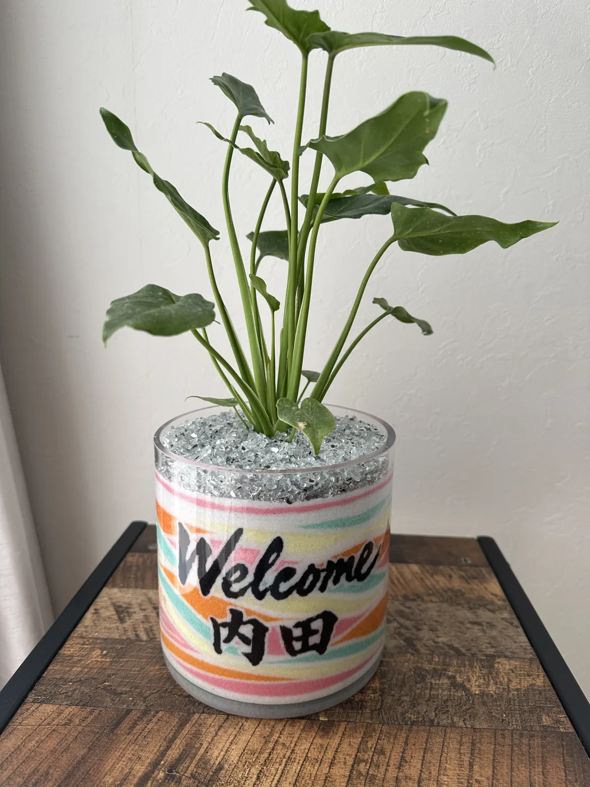
色とりどりの砂を重ねた鉢に観葉植物を植え、正面にお名前や店名を入れた——nicolonの名入れオーダーメイド観葉植物サンドアート。「Welcome ○○」の一鉢は、開店祝い・新築祝い・受付のウェルカムプランツ・記念品として大変ご好評をいただいています。育てられる観葉植物と、世界にひとつのデザイン。特別な贈り物にぴったりです。
名入れ観葉植物サンドアートとは
透明な器にカラーサンドを層状に重ね、そこに観葉植物やサボテンを植え込んだ作品です。鉢の正面にはご希望の文字（お名前・店名・「Welcome」など）をお入れできます。砂の色合わせと名入れで、贈る相手だけの特別な一鉢になります。
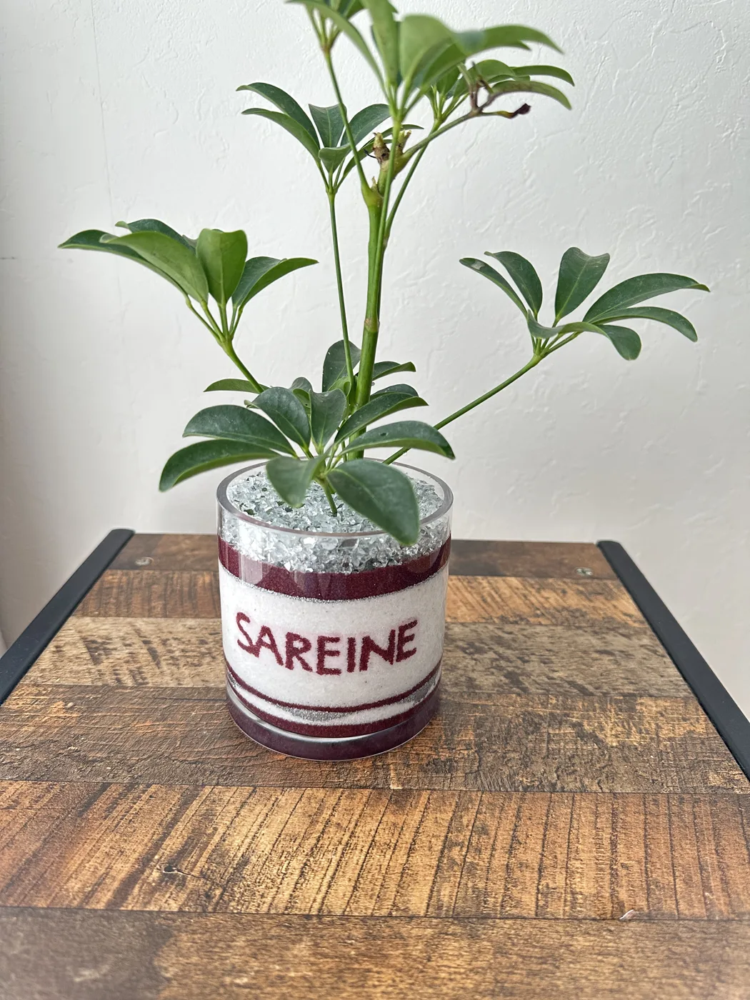
こんなシーンにおすすめ
- 開店・開業祝い：店名入りのウェルカムプランツで、お店の顔に
- 新築・開院・オフィス移転祝い：受付や玄関に置ける名入れギフトに
- ウェルカムスペース：店舗・サロン・クリニックの受付に「Welcome ○○」
- 記念品・周年記念：企業の周年や式典のノベルティ・記念品に
- お祝い・プレゼント：誕生日・結婚・退職など、名前入りの特別な贈り物に
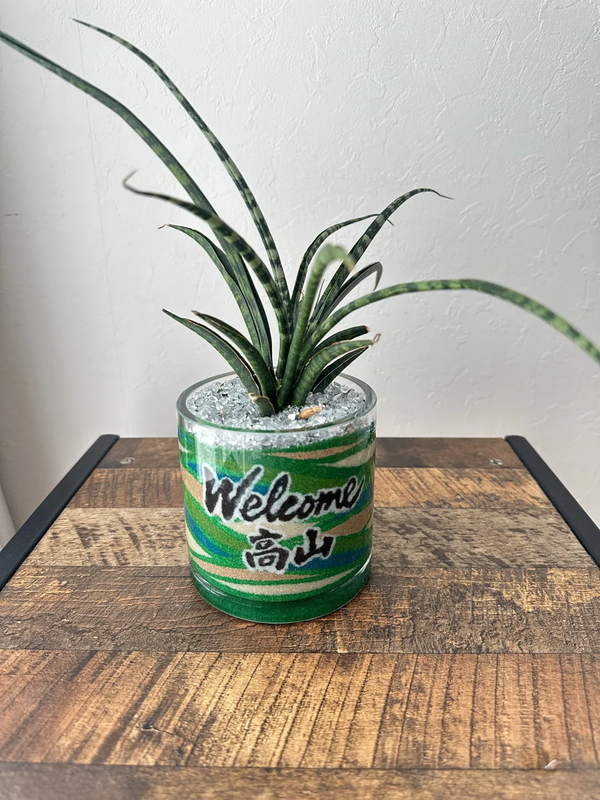
選べるポイント
- 名入れの文字：お名前・店名・メッセージ・「Welcome」など
- 砂の色：ブランドカラーやお好みの配色でグラデーションに
- 植物：パキラ・サンスベリア・ポトス・サボテンなど、育てやすい品種から
- サイズ・数量：単品から、開店祝いのまとめ発注まで対応
育てるのが苦手な方には、お手入れがラクな品種やフェイクグリーンでのご提案も可能です。
名入れオーダーのご相談
「開店祝いに店名を入れたい」「予算内でつくりたい」など、まずはLINEでお気軽にどうぞ。
全国発送OK・お届け日のご指定も承ります。
オーダー作品ギャラリー
これまでにお作りした名入れ観葉植物サンドアートの一部をご紹介します。
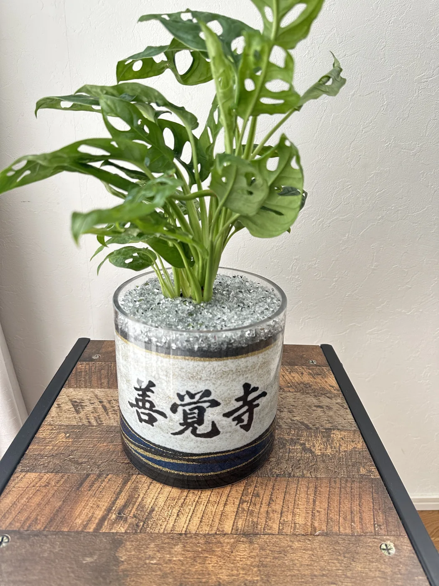
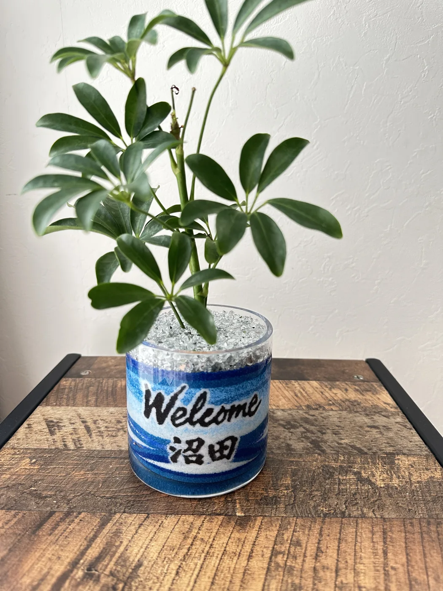
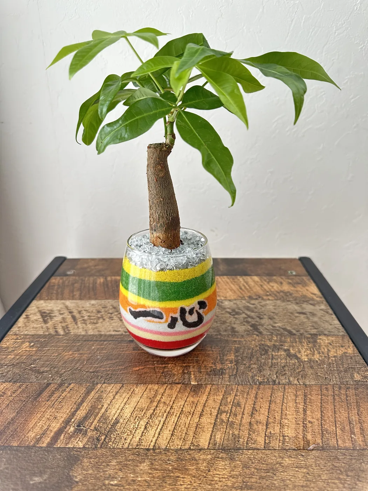
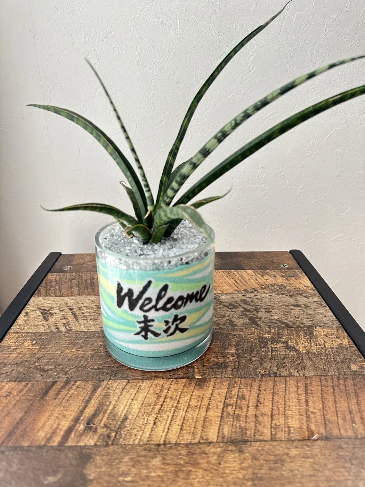
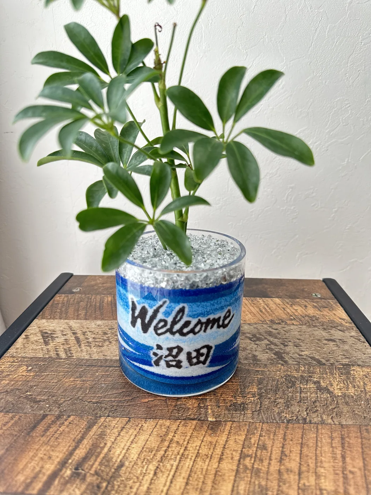
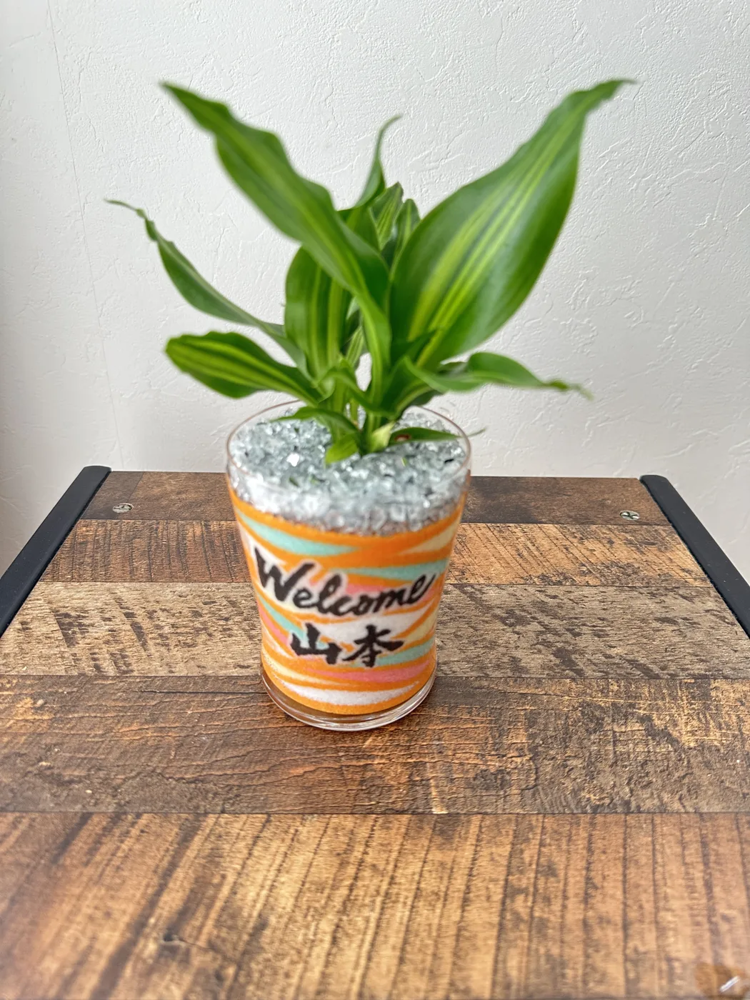
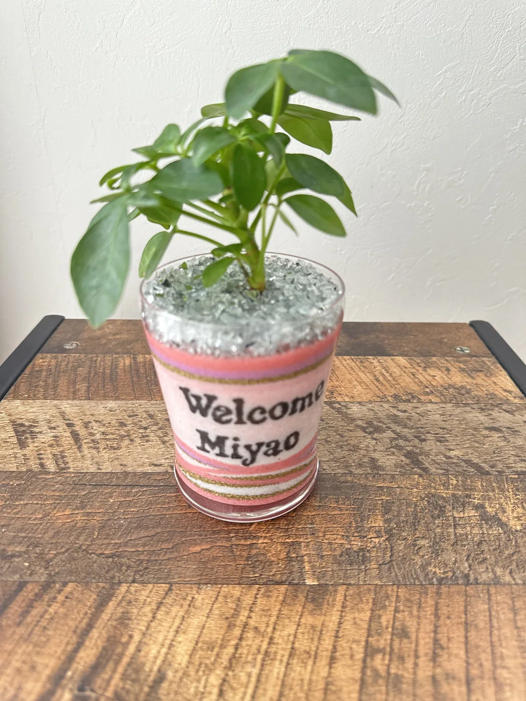
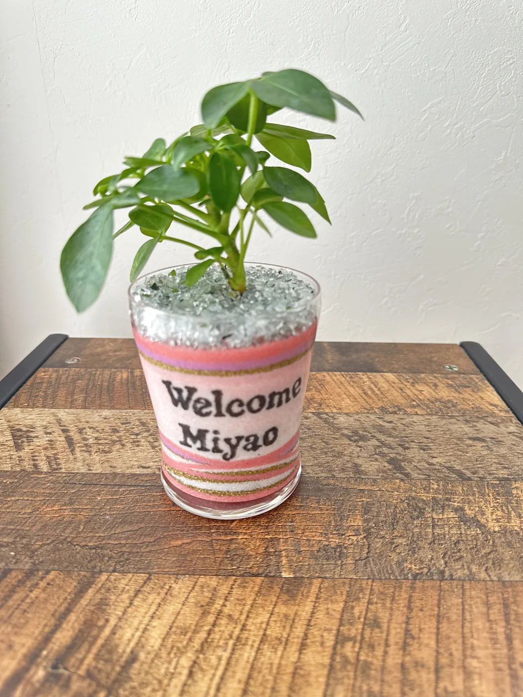
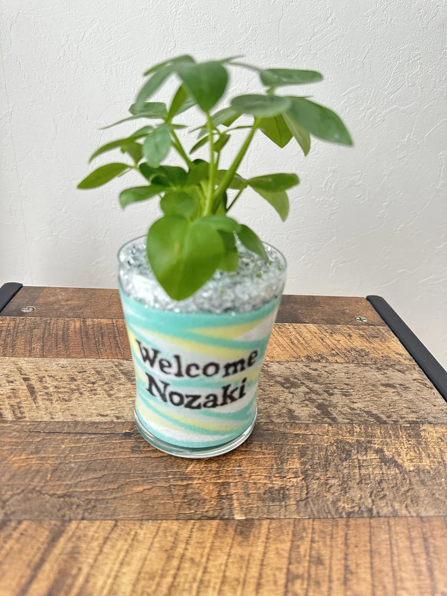
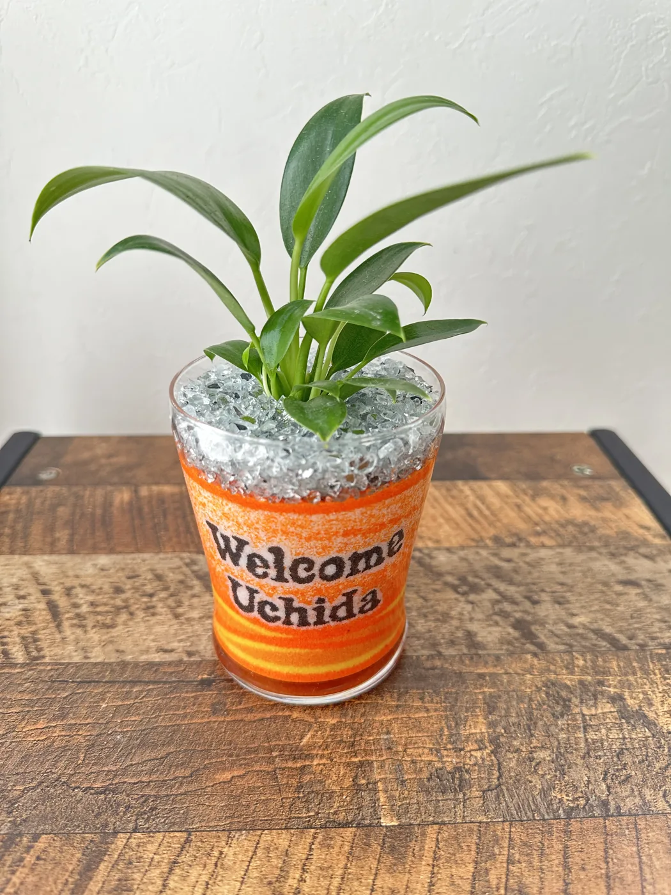
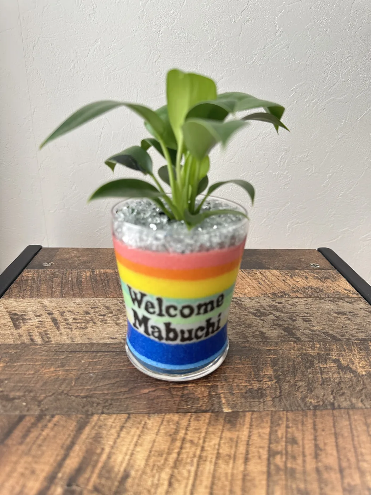
オーダーの流れ
- LINEでご相談（用途・ご希望の名入れ文字・数量・お届け日）
- 色や植物、デザインのご提案・お見積り
- 制作（通常数日〜2週間ほど）
- お届け（全国発送・お届け先指定OK）
よくあるご質問
名前や店名を入れられますか？
はい、「Welcome ○○」やお店の名前、記念日など、ご希望の文字を鉢の正面に入れられます。書体や色味もご相談いただけます。
植物は選べますか？お手入れは簡単ですか？
パキラ・サンスベリア・ポトス・サボテンなど、育てやすい品種を中心にお選びいただけます。置き場所や用途に合わせてご提案します。
全国に発送してもらえますか？
はい、全国発送に対応しています。お届け先へ直接お送りすることも可能です。ご希望日に合わせて手配します。
注文から届くまでどのくらいかかりますか？
通常は数日〜2週間程度です。お急ぎや大量注文もまずはLINEでご相談ください。
世界にひとつの名入れギフトを
24時間以内に返信いたします。開店祝い・記念品・ウェルカムプランツなど、ご用途に合わせて最適な一鉢をご提案します。

原野 玲未REMI HARANO
日本サンドアート協会 認定講師 / Webデザイナー
福岡県在住、5児の母。オーダーメイド制作から企業イベントまで、サンドアートの魅力を全国へお届けしています。
「誰かを想って色を選ぶ」——贈る人の気持ちに寄り添った、世界にひとつの作品づくりを大切にしています。